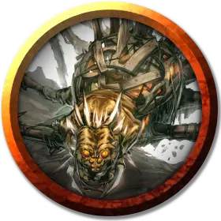

Железный паук
Iron Spider
Средний Конструкт, без мировоззрения

Класс Доспеха 19
Хиты 80 (15к10 - 2)
Скорость 30 футов, лазая 30 футов
| мод | спас | ||
|---|---|---|---|
| СИЛ | 18 | +4 | +4 |
| ЛОВ | 10 | +0 | +0 |
| ТЕЛ | 10 | +0 | +0 |
| мод | спас | ||
|---|---|---|---|
| ИНТ | 3 | −4 | −4 |
| МДР | 3 | −4 | −4 |
| ХАР | 1 | −5 | −5 |
Иммунитет к урону психическая энергия, яд
Чувства слепое зрение 60 футов (слеп за его пределами), пассивное Восприятие 6
Опасность —
Бонус мастерства +2
Особенности
Паучье лазание. Железный паук может лазать по сложным поверхностям, включая потолки, без совершения проверок характеристик.
Паутинные нити-тросы. Контролируемые Домом Фрет локации Лабиринта обнесены барьером из толстых паучьих нитей, прочных как железные тросы. Их производит железный паук, созданный и управляемый Дриввином Фретом. Когда его не используют для создания новых нить-тросов, паук находится на хранении в зоне 12b.
Нить-тросы, натянутые в зонах с 10 по 17, предназначены для того, чтобы удерживать минотавров и других крупных существ подальше от мест, контролируемых Домом Фрет. Между перекрещивающимися тросами имеется промежуток достаточный для того, чтобы существа Среднего и меньше размера легко могли мимо них проскользнуть. Более крупные размером существа, которые в состоянии пролезть в отверстие площадью в 2 фута, также могут перебраться через нить-тросы, но остальные не могут этого сделать.
Троса слегка липкие на ощупь, но не связывают и не удерживают дотронувшихся до них существ.
Каждый нить-трос имеет КД 19, 40 хитов, сопротивление к колющему урону, и иммунитет к урону ядом и психической энергией. Существо может порвать трос действием подкрепленным успешной проверкой Силы (Атлетика) Сл 30.
Действия
Нить-трос. Действием железный паук может выстрелить 6-дюймовый толщиной нить-трос длиной до 50 футов, прикрепляя дальний конец троса к твердой поверхности на расстоянии до 50 футов от него самого. Дополнительным действием он может отсоединить другой конец троса от себя и прикрепить его к твердой поверхности в пределах 10 футов. После того как он создаст 200 футов нить-троса, паук не может больше его произвести до следующего рассвета.
Описание
Железный паук предназначен исключительно для производства нить-тросов. У него нет ни атакующих, ни ответных (реакций) действий и нет инстинкта самосохранения.
Как и у скаладара, у железного паука тоже есть кольцо управления (принадлежит Дриввину Фрету). Железный паук подчиняется командам того, кто носит его кольцо управления. Паук перестаёт действовать в зоне заклинания преграда магии [antimagic field]. Если он является целью заклинания рассеивание магии [dispel magic], паук должен преуспеть в спасброске Телосложения против Сл спасброска заклинателя или отключившись упасть на 1 минуту.